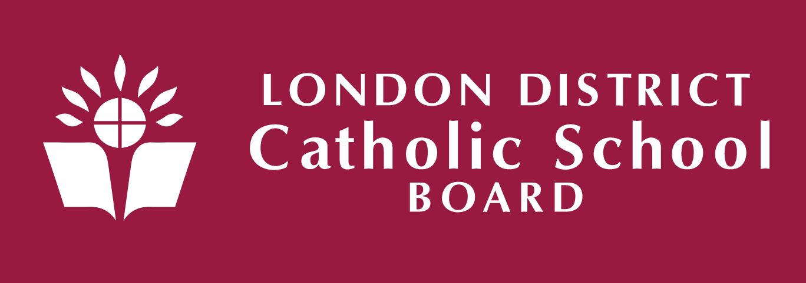

Education system for your children
Education in Ontario comprises public and private primary and secondary schools and post-secondary institutions.
By right of the constitution of Canada, Roman Catholics are entitled to their own school system.
Four large, overlapping publicly funded school systems provide primary and secondary education, organized into school districts:
31 English public, 29 English Catholic, 4 French public, and 8 French Catholic.
Post-secondary education in Ontario consists of 20 public universities, 24 public colleges and over 400 registered private career colleges.
In Canada, education falls almost entirely under provincial jurisdiction.
There is no federal government department or agency involved in the formation or analysis of policy regarding education for most Canadians.
Publicly funded elementary and secondary schools are administered by the Ontario Ministry of Education,
while colleges and universities are administered by the Ontario Ministry of Training, Colleges and Universities
Thames Valley District School Board
The TVDSB serves an area over 7,000 square kilometres which includes urban, suburban and rural communities.
It spans three counties and includes the cities of London, St. Thomas, and Woodstock, plus the towns of Ingersoll, Tillsonburg,
and Strathroy-Caradoc, as well as several smaller towns and villages.
In 2006, the Board administered 184 schools (154 elementary and 30 secondary schools). They also provide alternative education programs
for approximately 40,000 students through adult day school, continuing education,
general interest, night school and summer school courses. Two future elementary schools in Northeast and Northwest London are
currently being built.
Catholic School Board

TheLondon District Catholic School Board (LDCSB), known as English-language Separate District School Board,
is a separate school board offering Catholic education in Southwestern Ontario, Canada.
It serves students from the cities of London, St. Thomas and Woodstock, as well as the counties of Elgin, Middlesex and Oxford.
London Libraries
Most education after school and alternative educations are available at the libraries in London.
They provide dynamic and diverse programs for adults as well. With a library card, you can attend uncountable events.
Digital tools like Kanopy, Lynda.com, Flipster, and OverDrive are provided.
You can validate the parking for 2 hours at the London Central Library at City Plaza.